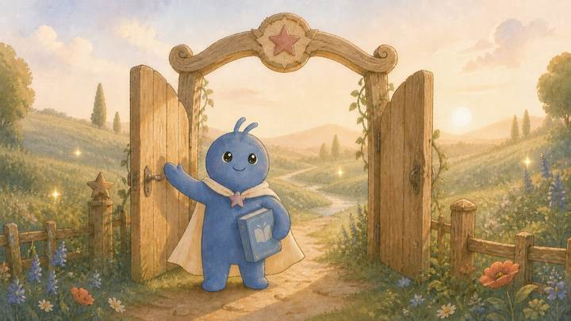
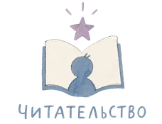
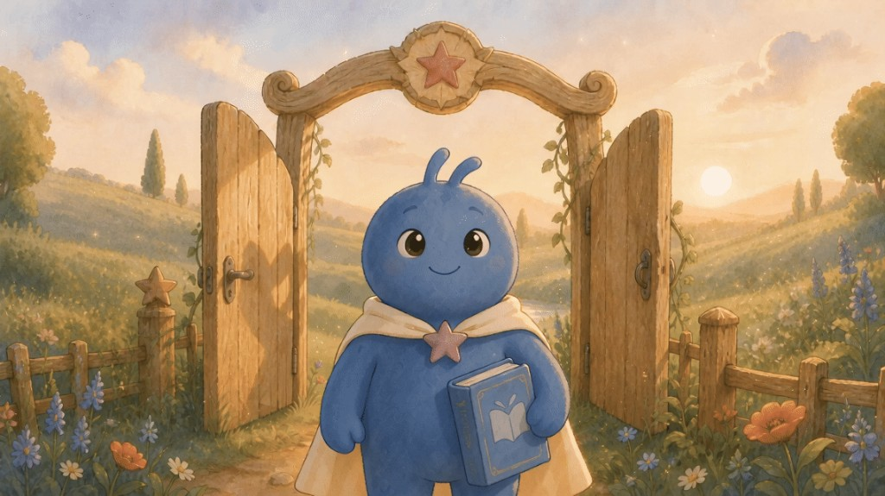
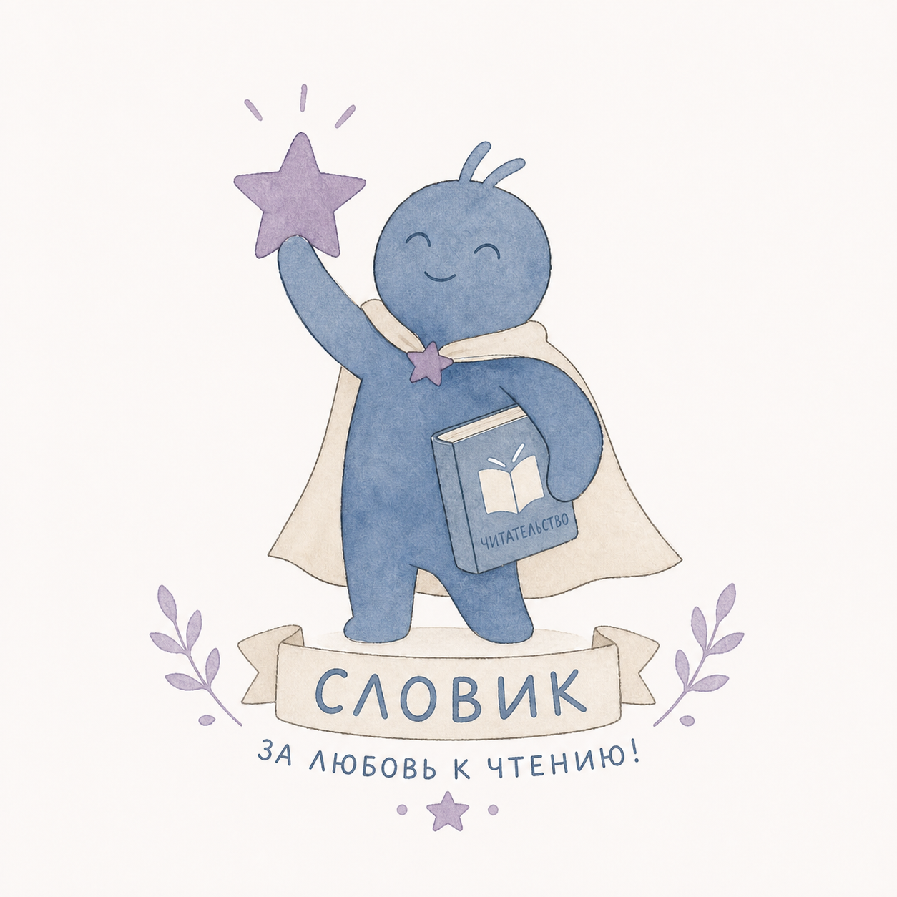

Буквы оживают
Первое знакомство с буквами и звуками, интерактивные занятия для детей от 4 лет. С этих занятий стоит начинать, чтобы научиться складывать слоги.

О школе
Онлайн-школа литературного чтения для детей 4–12 лет.
Короткая система занятий, где ребёнок учится понимать текст: о ком история, что чувствует герой, зачем этот эпизод в книге. От первых звуков и букв — к школьным сказкам и внеклассным повестям.
Занятие занимает 10–25 минут. Можно остановиться и вернуться. Для 6–7 лет рядом нужен взрослый. После урока открывается сундук: творческое задание дома, баллы и прогресс на личной странице.


Ольга Рощина
основатель школы · руководитель книжного ДоброЛавка в Москве

Словик — персонаж платформы. За задания начисляются баллы, открываются награды и прогресс на личной странице.Уроки
Короткая сессия 10–25 минут. Сначала работа с текстом — потом награда.

Шаг 1Текст / видео

Шаг 2Понимание сюжета

Шаг 3Смысл и эмоции

Шаг 4Образ и чувство

Шаг 5Пересказ своими словами
Понимание и пересказ
Чувства героев
Образы и пословицы
Привычку дочитать
Словик на экране урока
Баллы и награды
Видимый прогресс
Свой темп, без сравнения